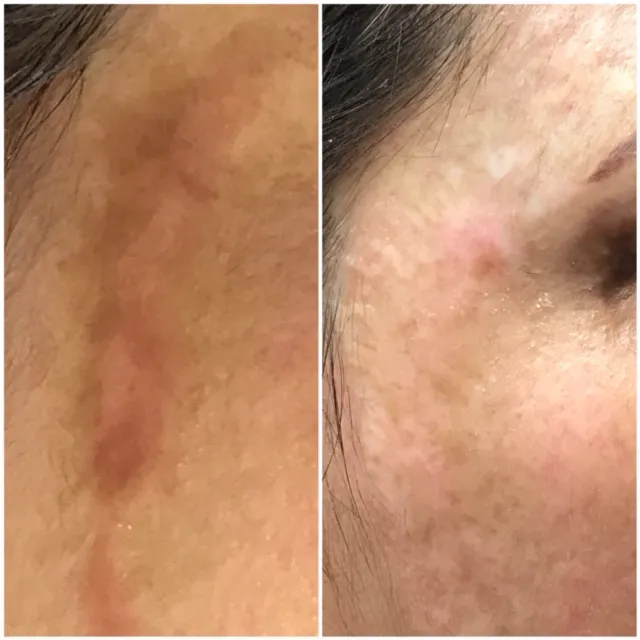
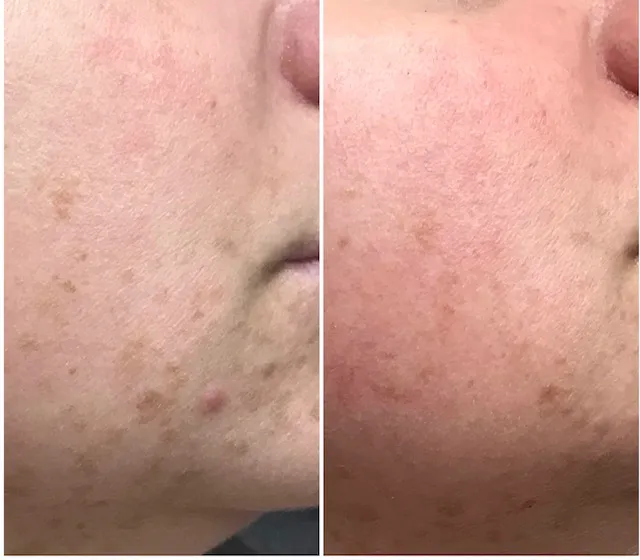
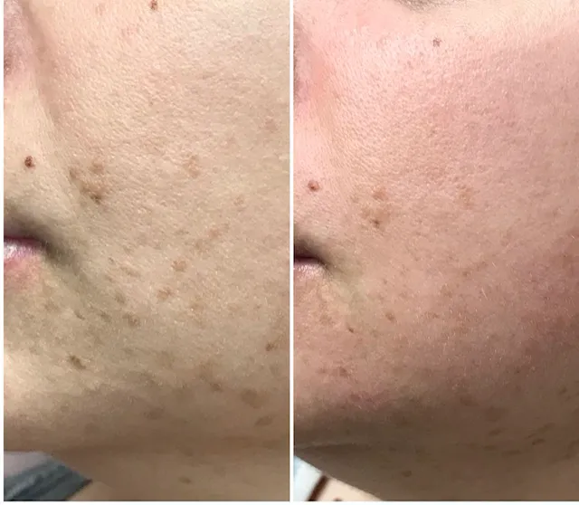
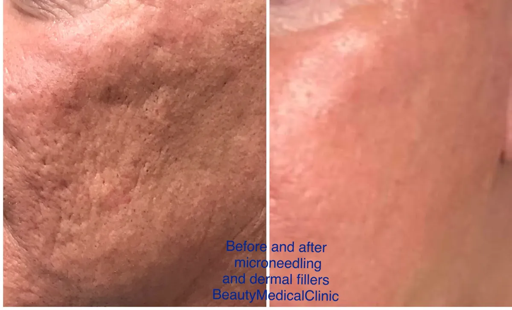

What it treats
- Acne scars
- Large pores
- Uneven tone and texture
- Stretch marks
- Fine lines and wrinkles
- Pigmentation
It is neither a laser nor a deep chemical peel. Some lasers don’t suit skin that tends toward hyperpigmentation, including many darker skin tones, because of the heat. Microneedling is tolerated by a much wider range of skin types.
How it works
The micro-injuries switch on the skin’s wound-healing phase, which produces collagen. During the session a concentrated sterile serum containing hyaluronic acid is applied; the micro-channels help it absorb deeply, adding moisture and stimulating the cells that make collagen and elastin.
- A thin layer of serum is applied to clean skin.
- The needle depth is set for your skin and the concern being treated.
- The pen is glided gently across the area.
Downtime and results
Right afterwards your skin has a healthy pink glow. Most people are pink for two to four days; some are fully healed in 24 hours, and you can be back in public within about five days at most. Skin looks healthier almost immediately, and collagen keeps remodelling for up to six months after your last session.
Most people have three sessions about four weeks apart. Deep wrinkles, acne scars, stretch marks or advanced sun damage usually need three to six sessions at two- to four-week intervals.
- Not painful
- Short healing time
- Cost effective
- Safe on thin skin
- Can be repeated
- Works on laser-resurfaced skin
Microneedling is also combined with PRP for a stronger collagen response.
Before your treatment
Before
- No treatment on sunburned skin. Avoid sun, tanning beds and self-tanner for at least 24 hours before and after, ideally a week. Treating soon after heavy sun can cause light or dark spots that may last months.
- Arrive with clean skin: no lotion, makeup or sunscreen.
- Stop Accutane and other photosensitizing medication at least 6 months before and during your course.
- No chemical peel on the area for 2 weeks before and after.
- No Retin-A, Renova or Tazorac for 1 week before and after.
- No waxing or depilatory creams for 2 weeks before and after. Shaving is fine right before, and 48–72 hours after if there is no irritation.
- Not during pregnancy.
- Tell us about any tattoos near the area, including cosmetic tattoos; they are avoided.
- If you get cold sores, you may be advised to take a preventive antiviral (such as Valtrex or acyclovir).
After
- A sunburn-like look and feel is normal for 1–3 days: tight, dry, a little swollen or sensitive. Darker areas may flake off within a week; let them, without picking or scrubbing.
- Wash gently twice a day with a mild cleanser and lukewarm water.
- Use a soothing moisturizer as often as needed for 3 days.
- Avoid sun for at least 24 hours, ideally 1–2 weeks. Wear a hat and SPF 30+ for any incidental sun.
- No exfoliating products for at least 1 week.
- No sweaty exercise, hot tub, sauna or steam while there is irritation.
- Advil or Tylenol is fine for discomfort; ice packs help swelling. Sleep on your back with your head slightly raised.
- No makeup for 12 hours.
Results




Beauty Medical Clinic clients. Individual results vary.
Am very pleased with the degree of professionalism and knowledge. Exceptional results that are a combination of artistry and skill.
Microneedling FAQ
How many microneedling sessions will I need?
Most people have three, about four weeks apart. Acne scars, stretch marks and deep lines usually need three to six at two- to four-week intervals.
What is the downtime?
Usually two to four days of pinkness, sometimes only 24 hours.
Which areas can be treated?
Face, neck, décolleté, arms, hands, legs, abdomen and back, which makes it useful for acne scars and stretch marks alike.
Is microneedling safe for darker skin?
It is tolerated by a wider range of skin tones than many heat-based lasers, because it doesn’t rely on heat.
This page is general information, not medical advice. Your suitability for any treatment is confirmed at a consultation with Victoria Adamov, RN.